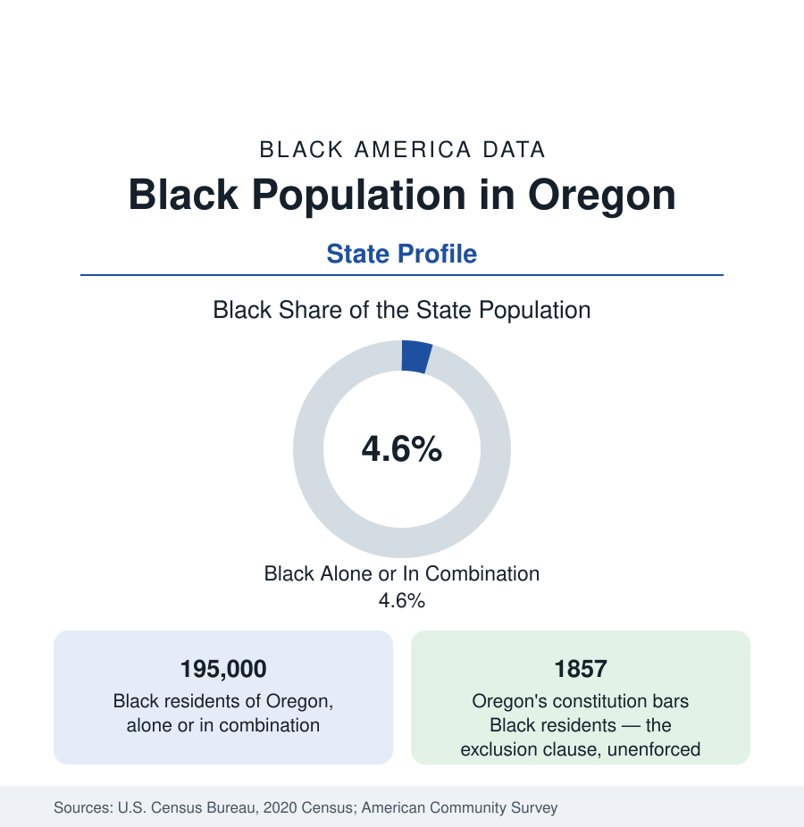

Black Census
Black Population in Oregon: The Exclusion State's Long Correction
About 195,000 Black Oregon residents — one in twenty-two — in the only state admitted to the Union with a Black exclusion clause in its constitution. The census profile.

Oregon holds about 195,000 Black residents — Black alone or in combination — roughly one in twenty-two of its people, with Black alone at about 92,000, or 2.2 percent. Oregon's Black profile cannot be read without its founding fact: it is the only state admitted to the Union whose constitution expressly prohibited Black people from residing in it. The exclusion clause of 1857 — a dead letter after the Fourteenth Amendment, unrepealed in text until 1926 — capped the Black population for a century; the modern community, centered in Portland, is the product of one wartime boom and everything that has happened since its erasure.
Exclusion and Its Arithmetic
The clause's effect is legible in the census series themselves: Oregon's Black population in 1900 numbered barely a thousand, in a state of over 400,000 — the smallest Black share of any state outside the northern Rockies, maintained by the provisional government's earlier exclusion laws (1844 and 1849), by the clause, and, after its legal death, by the sundown practices and the organized white-supremacist presence of the 1920s, in which Oregon's chapter was among the nation's largest per capita. The tiny community that persisted — Portland's railroad porters and hotel workers along the old Albina waterfront, a congregation tradition dating to the 1860s — lived its whole early history under the founding document's shadow. The reference records this as the data's necessary context: Oregon's Black numbers are small today in part because they were made small, deliberately, at the founding.
Vanport and the Wartime Transformation
The transformation arrived by shipyard. The Second World War's Kaiser shipyards in Portland drew tens of thousands of workers, Black migrants among them (recruited, after pressure, from the South and Midwest), and housed them substantially in Vanport — the federal housing city built in 1942 on the Columbia's floodplain, at its peak Oregon's second-largest city and roughly a third Black. The Vanport flood of 1948 destroyed the city in a day, killing residents and dispersing its Black population into Portland's Albina district, the community's consolidation point for the next half-century. The shipyard generation founded modern Black Oregon: its churches, its Urban League chapter (among the West's strongest), its newspaper tradition, and its political line — the state's Black civic leadership descends in large part from Vanport's survivors.
Portland: Albina to the East Side
Portland holds roughly three-quarters of Black Oregon. The city itself is about 6 percent Black in alone counts (higher in combination), its community centered historically in Albina — the formerly independent city across the Willamette whose Boise, Eliot, King, and Vernon neighborhoods formed Black Portland's heart — and displaced steadily eastward by the region's appreciation into the districts east of 82nd Avenue and the Gresham suburbs, in the Pacific displacement pattern of Seattle's file at smaller scale. The metro's Black population totals roughly 150,000. Beyond Portland: Eugene and Springfield hold a small university-shaped community; Salem, the capital, a small government one; Bend and the resort corridor a service-economy increment; Medford and the southern counties the state's minimums — and the whole state's Black institutional layer (the Portland institutions, Oregon's Black heritage organizations, the university programs) operates from the one metro.
Composition and Indicators
The composition layers the shipyard descendants, a substantial East African and Ethiopian/Eritrean community (Portland is a resettlement site of the interior Pacific pattern), Caribbean and West African increments, and California in-migration. The indicators present the region's split file: attainment and aggregate incomes lifted by the metro's educated economy, the Albina displacement data and east-side tract indicators at the difficult end, and homeownership — in the state with the exclusion clause in its past — the symbolically central series, tracked by the state's own fair-housing audits, which continue to find the paired-testing disparities the national data show. Oregon's Black elected presence (Portland's and the legislature's) runs ahead of its population share, in the pattern of the other small-share western states.
Reading the Oregon Numbers
Oregon's 195,000 Black residents complete the fifty-state survey on the note the whole census section sounds at every scale: the populations in these tables are the outcomes of policy as much as of demography — of exclusion clauses and shipyard recruitments, of floods and freeways. Oregon's data are the West's clearest proof, because its founding document said the quiet part in writing, and its modern tables measure the correction still in progress.
More in Black Census
The Black Population of the United States: Size, Definitions, and Distribution
The Black population of the United States totals 52.8 million — 15.4 percent of the nation. How the Census Bureau defines and counts the population, and where it lives.
Black Median Household Income in the United States
Black median household income stands at $56,490 in the Census Bureau's annual income report — how the figure is measured, how it compares, and what drives it.
The Black Poverty Rate: Levels, Children, and the Long Trend
The official Black poverty rate is 17.1 percent — against 11.1 percent nationally and 7.7 percent for non-Hispanic White Americans. How poverty is measured and what the data show.
Source: U.S. Census Bureau, 2020 Census; American Community Survey; Population Estimates Program.